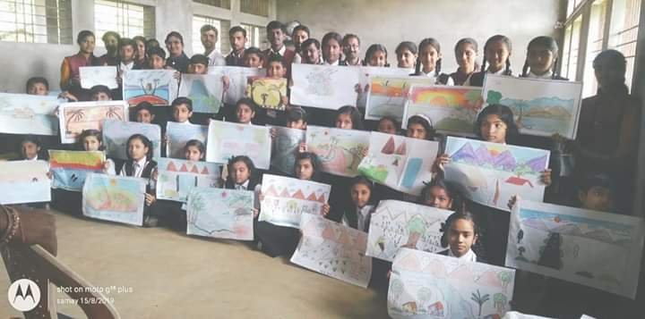
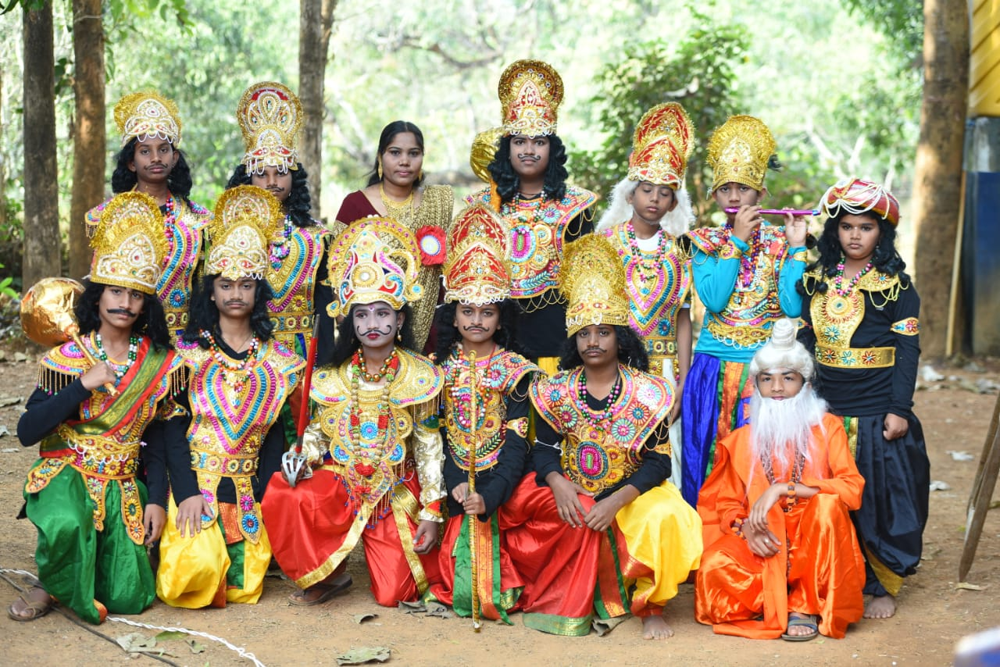
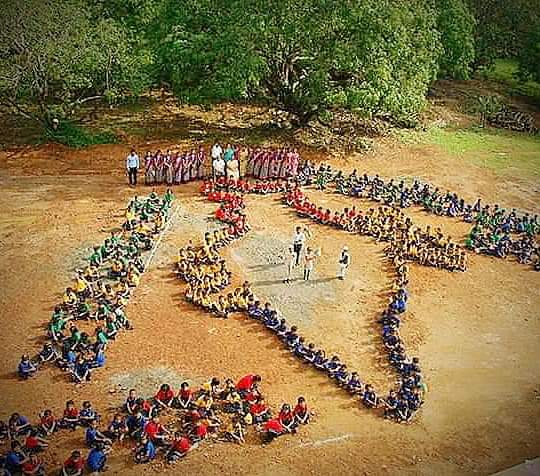
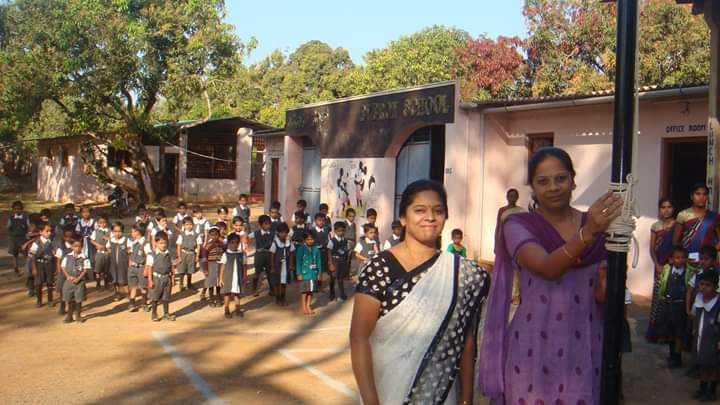
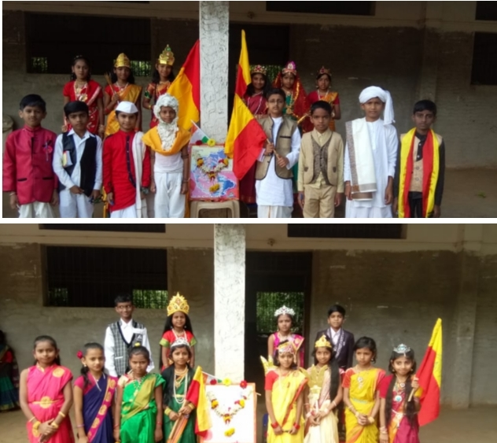

CELEBRATIONS
EVERON CHITRA-SIRI

Chitrasiri, a one day school level art camp is conducted every year at the Everon campus.
Chitrasiri has been a great platform for younger artists to display their talent.
Every year hundreds of artists participate in this event and create paintings on the spot .
There are landscapes, portraits, modern arts, drawing and watercolor.
Chitrasiri 2012 was inaugurated by M.S.KARTHIK.
Mrs. Charitha Karthik was the Chief Guest of Chitrasiri 2012. She appreciated the works done by the studentss and told them not to forget those who promote them by bringing them out of seclusion and giving them such a huge platform.
The platform would directly launch them into limelight and get them recognition in society. She also said that in the past these kinds of art camps were very few and because of this artists never came out of darkness.
EVERON TARANG

The word ‘TARANG’ gives the meaning ‘traditional value’.
The programme will begin with the lighting of the lamp by the dignitaries
There will be a welcome speech and vote of thanks during the following day of the event and no scope for any unnecessary speech.
This programme of 4 hours duration starts at 6 p.m. and ends at 10 p.m. everyday.
The ambience backed by the natural serenity of the surrounding greenery, lit with the colourful electric lights at night would make the audience enthralled and engrossed in the musical and artistic programmes performed on a grandly decorated large stage.
tarang is organised with the motto of fostering the musical, artistic and cultural interests among the students.
Besides, it is an immense opportunity to the civilians of Anavatti to witness and enjoy the rare moments of the performances by the students.
EVERON INDEPENDENCE DAY


Everon Education Foundation celebrated a grand Independence day function at the Everon Campus,Kotipura.
300 students came dressed in the tri-color and created a spectacular event.
The students released 150 helium balloons into air to commemorate the country’s freedom from the foreign rule.
In the year 2015, the flag was unfurled by Mrs Shilpa Avinash.
Later she addressed the gathering and spoke on the necessity of celebrating the Independence Day.
She said that by celebrating we display our solidarity and unity and reiterate in our mind that we live in an Independent country. She added that unfortunately the values and ideals that were held in high esteem during the independence are now getting diluted. Corruption has deeper roots which has made inroads in the mindset and ideologies of people resulting in fall in the ethical level of people.
EVERON PRATIBA KARANJI

Pratiba Karanji is an innovative program where Cultural and literary competitions are conducted at cluster, block, and District and State levels.
Every year our school students grab maximum number of prizes in cluster,taluk and district levels.
The motto behind Pratiba Karanji Program is to help in the personality development of the students
It combines education and entertainment, and encourages develop the non-cognitive skills.
bring out the hidden talents in children
Provide a platform for the students to learn and acquire new skills for life.
Provide teacher an opportunity to play a vital role in identifying the talent in the student.
Encourage Parents and teachers to mould the personality of the children and develop competitive spirit in them.
Engage and exhibit themselves in extracurricular activities along with the academics